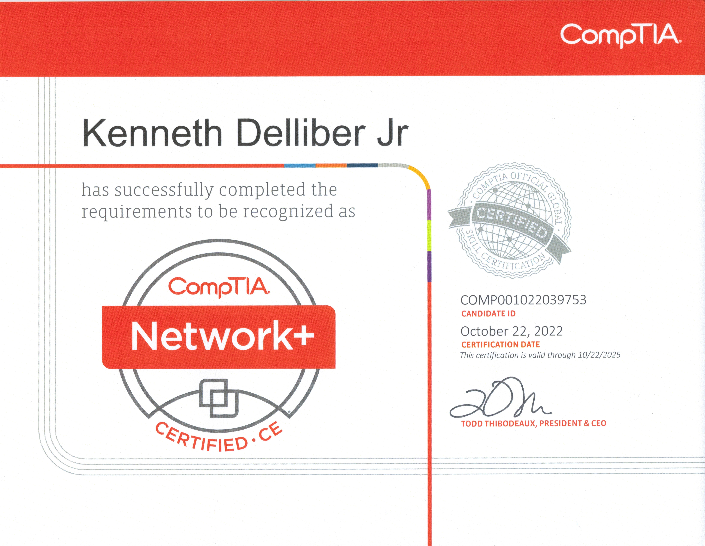
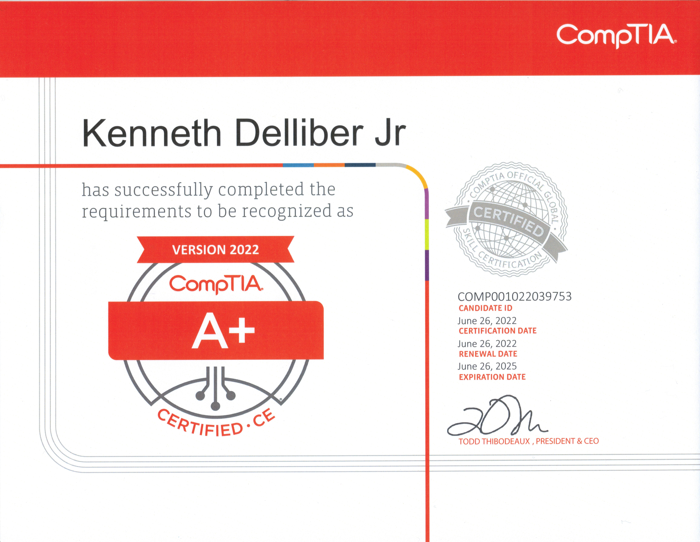

Associate Degree in Specialized Technology

Computer and Data Management curriculum from YTI Career Institute (Graduated with a 4.0 GPA).
TestOut Security Pro

Validates knowledge of cybersecurity principles and best practices.
TestOut Linux Pro

Hands-on certification covering Linux installation, management, and configuration.
CompTIA Network+
Validates essential networking concepts like configuration, management, and troubleshooting.
TestOut Network Pro

Practical network skills including routing, switching, and network security.
CompTIA A+
Core certification demonstrating foundational IT knowledge and skills.
TestOut PC Pro

PC hardware, software, and troubleshooting fundamentals.
Computer Network Technologies Certificate

Focused training in computer networking and system maintenance.
TestOut Office Pro

Demonstrates proficiency in Microsoft Office productivity tools.